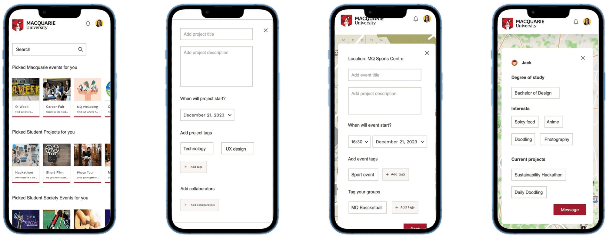
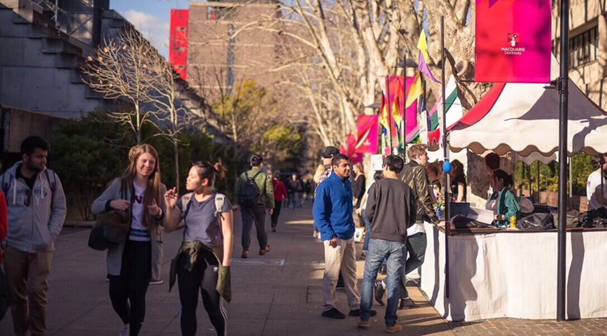
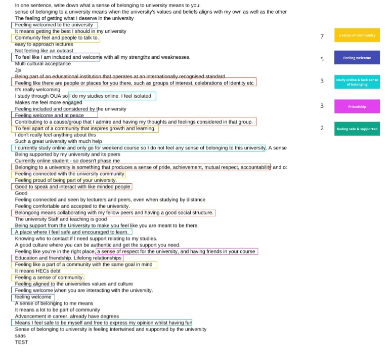
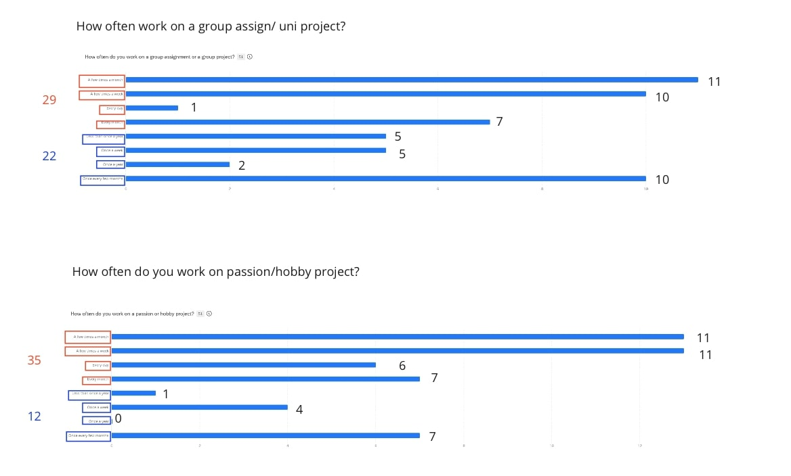
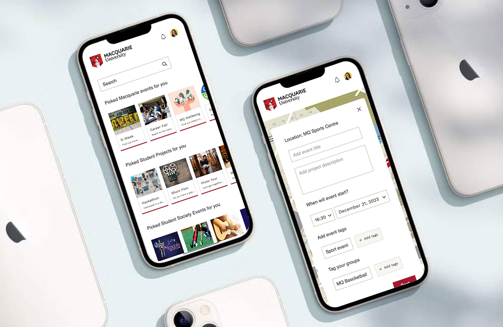

Explore Other Projects


Got a project in mind?
Get in touch to see how we can collaborate on your project
Contact MeIndustry: Higher Education
Services: Product Design (UX UI)
Date: Nov 2022 – Apr 2023
Creating student connection and engagement through an innovative mobile app

Macquarie University’s SJET initiative revealed a pressing issue in the era of hybrid learning — students were finding it increasingly difficult to feel connected. Many struggled to build community, navigate campus life, or access the right support. The post-pandemic environment had eroded students’ sense of belonging, leaving them disengaged and isolated.

To address this, we conducted surveys with students across Australian universities to explore how they define belonging, what drives connection, and how hybrid environments shape collaboration.
Our findings highlighted three key pillars of belonging: community, friendship, and self-expression. Students wanted authentic ways to connect with peers who share similar academic or personal interests — supported by a centralized system that made communication seamless and intuitive.


Building on these insights, we conceptualized a mobile app designed to foster meaningful connection. A personalized onboarding survey curates relevant updates and opportunities based on each student’s program, interests, and location. The platform helps students find peers nearby, join or organize events, collaborate on passion projects, and receive tailored notifications — creating a cohesive ecosystem for connection and engagement.

The proposed app reimagines how universities can nurture belonging in hybrid learning environments. By focusing on interest-based communities and centralized communication, it helps reduce isolation, encourages participation, and builds a more supportive student experience that extends beyond the classroom.
Get in touch to see how we can collaborate on your project
Contact Me